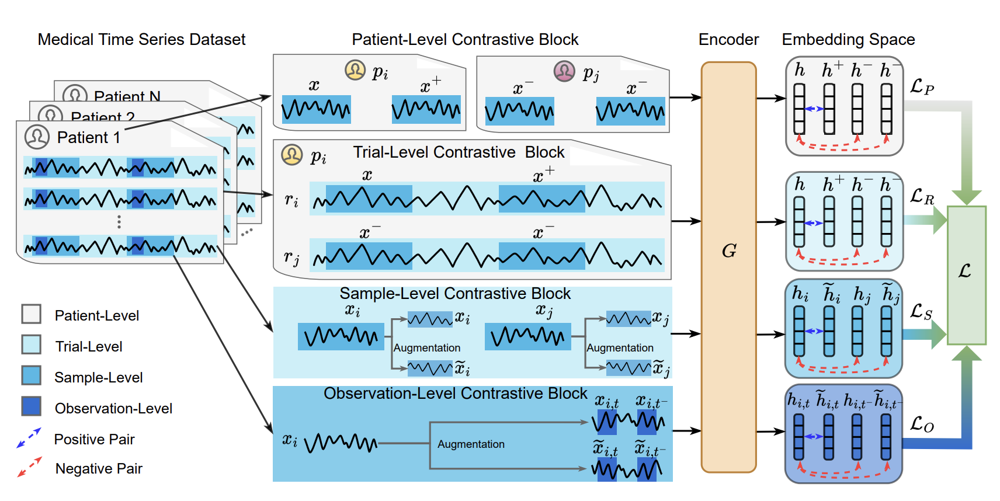
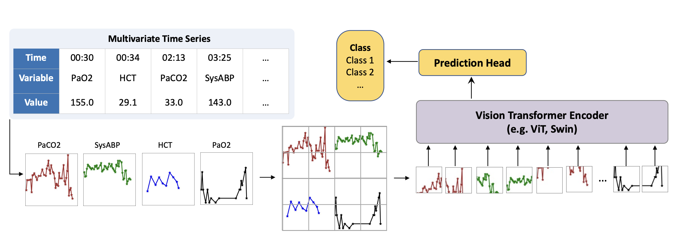
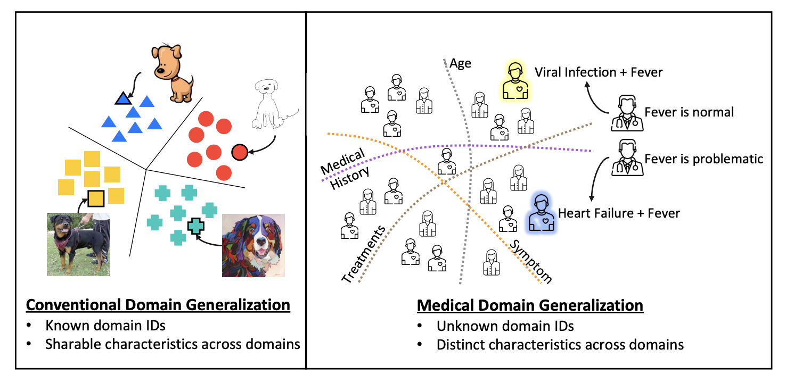
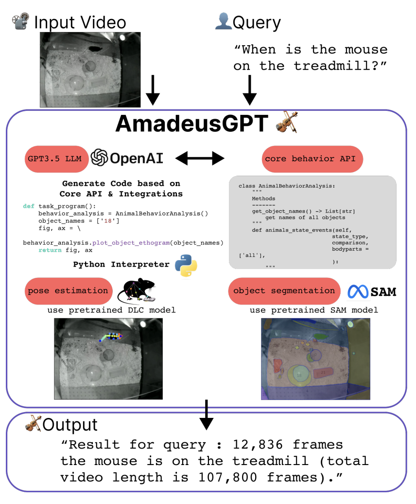

General impressions
Last December, I had the pleasure of attending the 2023 edition of the Neural Information Processing Systems (NeurIPS) conference in New Orleans. It was my first time in such a large venue, and I must admit I was slightly overwhelmed by the number of people and the sheer amount of information available. However, I got a lot of insight from the several interesting talks and poster sessions I managed to attend, and I would like to share some of my favourite snippets with whoever is interested. Below the three papers I found most interesting for my current research, as well as a bonus track on an amazing project that calls back to my PhD days.
Contrast Everything: A Hierarchical Contrastive Framework for Medical Time-Series
The first paper in the list introduces COMET, a contrastive learning framework to learn representations of medical time series in a self-supervised manner. The main contribution the authors present is a hierarchical training scheme for time series encoders that has four main contrastive loss terms, aiming to contrast single observations, trials, samples, and patients, exploiting and learning from different levels of data consistency that may be lost otherwise. For all levels, they use variants of the InfoNCE (Information Noise Contrastive Estimation) loss, where positive and negative pairs are sampled using a masking-based augmentation procedure.
As a recap, let’s start with the regular InfoNCE loss. Given a set of samples (/x_i/) and a different set /(x_j/), the InfoNCE loss is defined as:
$$ \mathcal{L}_{\text{InfoNCE}} = -\frac{1}{N} \sum_{i=1}^{N} \log \frac{\exp(\text{sim}(x_i, x_i^+))}{\sum_{j=1}^{K} \exp(\text{sim}(x_i, x_j^-))} $$where \(x_i^+\) is a positive sample, \(x_j^-\) a negative sample, and \(\text{sim}\) a similarity function (typically the dot product between the embeddings or cosine similarity, but it could be anything else). The idea is to maximise the similarity between the encoder and projection head for positive pairs, while minimising it for negative pairs (notice the \(-\) sign!). But how do we define positive and negative pairs? Well, this is where COMET shines…
The four levels I mentioned above are defined as follows:
-
Observation level: First, augmented observations of the same time point are treated as positive pairs \((x_{i,t}, \tilde{x}_{i,t})\), while real and augmented observations of different time points are treated as negative \((x_{i,t}, x_{i,-t}\) and \((x_{i,t}, \tilde{x}_{i,-t})\), where \(x\) is a given sample, \(\tilde{x}\) an augmented sample, \(i\) the sample index, and \(t\) the time index.
-
Sample level: Second, augmented observations of the same sample are treated as positive pairs \((x_{i}, \tilde{x}_{i})\), while real and augmented observations of different samples are treated as negative \((x_{i}, x_{j}\) and \((x_{i}, \tilde{x}_{j})\).
-
Trial level: We now take subsets of each time series into account for memory purposes, and group observations belonging to the same subset in to trials. We apply the same basic loss, but to an aggregated representation of the entire trial instead of the observation-level embeddings. Of all four, it’s the only one that comes as an artefact of hardware limitations, rather than from real consistencies in the data themselves. It’s unclear if this would be necessary in a more powerful hardware setup.
-
Patient level: last but not least, we repeat step 3, but now with trials grouped into belonging to the same patient or not. Different time series sampled from the same individuals are regarded as positive pairs, and as negative otherwise. This is really interesting because it’s the only level that takes into account the patient’s identity, which can be crucial for generalisation in medical data.
By training the encoder with these four levels of contrastive loss, the authors aim to learn representations that are invariant to the different levels of data consistency.
The main workflow looks like this (check the paper for more details!):

The experiments in the paper focus on regularly sampled EEG data with little to no missing values. However, their contrastive framework seems like a great starting point for multi-level learning for irregularly sample data (such as ICU time series) as well. They beat several time series self-supervised baselines in detecting myocardial infarction and Parkinson’s disease.
Time Series as Images: Vision Transformer for Irregularly Sampled Time Series
We now move to a paper that caught my attention because of the lateral thinking in place. Time Series as Images presents a peculiar way of processing irregularly sampled time series for supervised learning, based on plotting the collected values as images and processing them using a pretrained vision swin transformer. The authors run several unorthodox experiments on how different styles of plotting influence performance, such as markers, interpolation, variable order, and colours. Moreover, they include several experiments on intensive care unit data, and provide direct comparisons with many baselines, including SeFT from the Borgwardt lab where I work. They reach SOTA performance in various tasks, including sepsis and mortality prediction on physionet 2019 and 2012 challenge data, respectively. They train the models with a simple binary cross-entropy loss, while upsampling the minority class. Interestingly, they also included static information (age, height, weight, sex, demographics) as a paragraph embedded with an encoder-only language model. Time series and static text embeddings were concatenated prior to classification. Truly unorthodox, but it seems to work!
The main workflow looks like this (check the paper for more details!):

All in all, this article clearly demonstrates the generalising capabilities of large vision models, but whether their ideas can be extended to make generalizable time series models remains to be seen.
An Iterative Self-Learning Framework for Medical Domain Generalization
Finally, the third work in this summary presents an approach to mitigate distribution shift in electronic health record (EHR) data, named SLDG (Self-Learning Domain Generalization). In a nutshell, the approach starts by grouping the features semantically in different classes (such as statics, symptoms, treatments, and medical history). Each feature subset is embedded with a trained encoder to an individual latent space, and a series of latent domains are retrieved for each modality using hierarchical clustering, with the number of clusters selected automatically based on the silhouette score. This makes it easier to unravel really specific clusters as the intersection of not-so-rare groups of specific features (such as a cluster of older male patients with a history of smoking and type 2 diabetes, which can be decomposed in older, male, smoking, and type 2 diabetes). Lastly, individual classifiers for a given target variable are trained for each of these feature classes, with clusters recomputed every 20 epochs.

Their experiments focus on 15-day readmission and mortality prediction on both MIMIC-IV and eICU, with data splits maximising the temporal and spatial gaps between samples, the latter based on the geographical location of the hospitals. They beat several domain generalization baselines on all tasks and metrics, which sounds promising. Interestingly, they do not provide generalization metrics between eICU and MIMIC-IV; only within each dataset individually.
All in all, this seems like a smart approach to efficiently group representations based on prior knowledge about the features, which can have a positive impact on domain shift.
Bonus track:
AmadeusGPT: a natural language interface for interactive animal behavioral analysis
During my PhD, I worked a lot with motion-tracking data coming from animal experiments. The absolute state-of-the-art, both in terms of performance and user support, for motion tracking in biology, is DeepLabCut. However, the main software is not the most user-friendly, and it can be quite cumbersome to use for wet-lab biologists. This is where AmadeusGPT comes in. By leveraging several milestones from the Mathis lab, such as DLC super animal (a model that enables zero-shot tracking), object segmentation using SAM, and API calls to ChatGPT, the authors (also the DeepLabCut team!) present a natural language interface for interactive animal behavioral analysis, where the user can ask questions about the data in plain English, and the system will return the relevant information.

At the time of writing, the system is available upon request (which is understandable given the pricing of large-volume ChatGPT API calls), but it seems like a great step forward in making cutting-edge technology more accessible to the general public. I can’t wait to see how this project evolves!